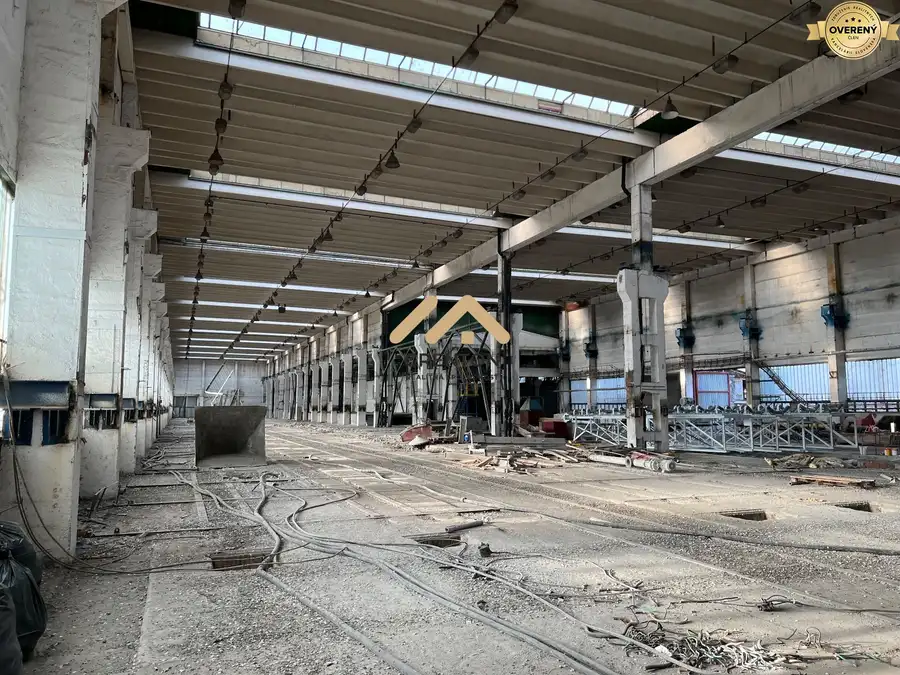
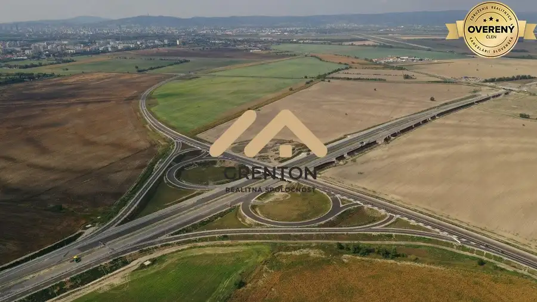
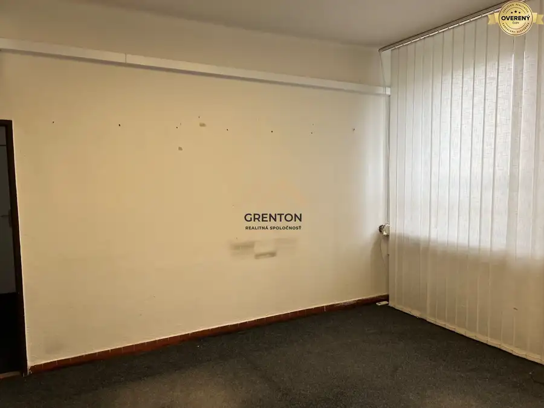
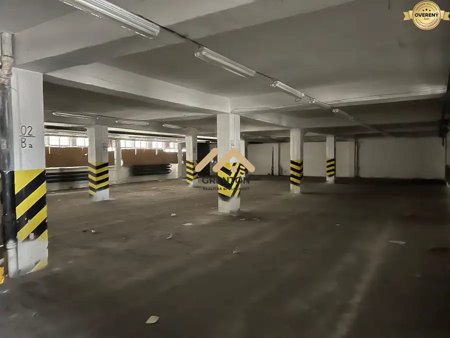
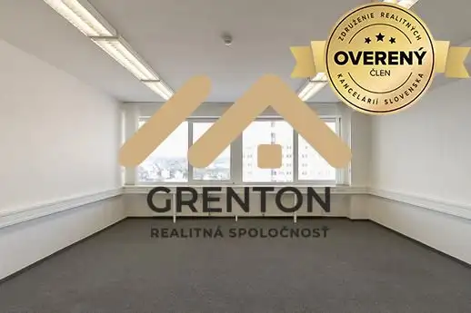

Aktuálna ponuka
Nehnuteľnosti, ktoré ponúkam
9 nehnuteľností na predaj a prenájom. Vyberte typ, alebo napíšte lokalitu.
9 z 9 ponúk
 Pozemok10
60 500 €Na predaj pozemok pri kúpalisku vo Veľkom Mederi s projektom
Veľký Meder
482 m²
Voľnébývanie.sk ponúka na predaj pozemok pri termálnom kúpalisku s kompletným projektom apartmánového domu s bytom 100 m2 alebo nadštandartné…
Pozemok10
60 500 €Na predaj pozemok pri kúpalisku vo Veľkom Mederi s projektom
Veľký Meder
482 m²
Voľnébývanie.sk ponúka na predaj pozemok pri termálnom kúpalisku s kompletným projektom apartmánového domu s bytom 100 m2 alebo nadštandartné…
 Pozemok
375 000 €Na predaj stavebný pozemok 4 397 m2 vo Vlčkovciach s ÚPI pre domy
Vlčkovce
4397 m²
Pozemok = 4 214 m2 Prístupová cesta = 183 m2 Na pozemku sú všetky IS. Pozemok s prístupovou cestou je na mapke znázornený krikľavo zelenkavou farbou.…
Pozemok
375 000 €Na predaj stavebný pozemok 4 397 m2 vo Vlčkovciach s ÚPI pre domy
Vlčkovce
4397 m²
Pozemok = 4 214 m2 Prístupová cesta = 183 m2 Na pozemku sú všetky IS. Pozemok s prístupovou cestou je na mapke znázornený krikľavo zelenkavou farbou.…
 Developerské projekty2
1 068 960 €Na predaj orná pôda v Podunajských Biskupiciach 13 362 m2
Podunajské Biskupice, Bratislava
13362 m²
Rozloha = 13 362 m2 Šírka = 17 m, dĺžka = 786 m2 Prístup: asfaltová cesta 1 m2 = 80€/m2 13 362 m2 = 1 068 960EUR Voľnébývanie.sk V prípade záujmu…
Developerské projekty2
1 068 960 €Na predaj orná pôda v Podunajských Biskupiciach 13 362 m2
Podunajské Biskupice, Bratislava
13362 m²
Rozloha = 13 362 m2 Šírka = 17 m, dĺžka = 786 m2 Prístup: asfaltová cesta 1 m2 = 80€/m2 13 362 m2 = 1 068 960EUR Voľnébývanie.sk V prípade záujmu…

Nebytové priestory10 Cena dohodouNa prenájom hala na prízemí (3 000 m2) v Rovinke, ktorá sa dá rozdeliť Rovinka 3000 m² Úžitková plocha = 3 000 m2 Prízemie Minimálna doba prenájmu: Dohodou 1 m2 = Dohodou / mes + energie + DPH Voľnébývanie.sk V prípade záujmu volať Mgr.…
Pozemok 1 836 400 €Na predaj lukratívny, investičný pozemok 18 364 m2 vo Vrakuni Vrakuňa, Bratislava 18364 m² Úžitková plocha = 18 364 m2 Šírka = 35 m a dĺžka 532 m Klasifikácia orná pôda. Je rovinatý a skladá sa z dvoch susediacich parciel. V prípade záujmu…
Nebytové priestory10 Cena dohodouNa prenájom šikovné kancelárie v Rači od 10, 16, 20, 40 až po 100 m2 Rača, Bratislava 20 m² Úžitková plocha = 10, 16, 20, 40, 100 m2 Rôzne poschodia 1 m2 = 10,80EUR / mes aj s energiami + DPH 20 m2 = 216EUR / mes aj s energiami + DPH…
Nebytové priestory10 Cena dohodouNa prenájom hala v Rači 600 m2, ale je už len voľných 300 m2 Rača, Bratislava 300 m² Úžitková plocha = 300 m2 Prízemie Hala má 600 m2, ale na prenájom je už len polovica = 300 m2. 1 m2 za priestor = 6EUR / mes + energie podľa… Nebytové priestory10
Cena dohodouNa prenájom hala v Rači 750 m2, ktorá sa dá rozdeliť na dve polovice
Rača, Bratislava
750 m²
1 m2 za priestor = 6EUR / mes + energie podľa skutočnej spotreby + DPH 300 m2 za priestor = 1 800EUR / mes + energie podľa skutočnej spotreby + DPH…
Nebytové priestory10
Cena dohodouNa prenájom hala v Rači 750 m2, ktorá sa dá rozdeliť na dve polovice
Rača, Bratislava
750 m²
1 m2 za priestor = 6EUR / mes + energie podľa skutočnej spotreby + DPH 300 m2 za priestor = 1 800EUR / mes + energie podľa skutočnej spotreby + DPH…

Nebytové priestory5 Cena dohodouPonúkame Vám na prenájom kancelárie na Bardošovej ulici - Nové Mesto Nové Mesto, Bratislava 20 m²2. podlažie Nebytové priestory (kancelárie) sa nachádzajú na 2. poschodív v Biznis centre a majú rozmery: 8,47 m2, 18,53 m2, 20,15 m2. 2. poschodie je priestor…Tomuto výberu zatiaľ nezodpovedá žiadna ponuka. Napíšte mi, čo hľadáte.